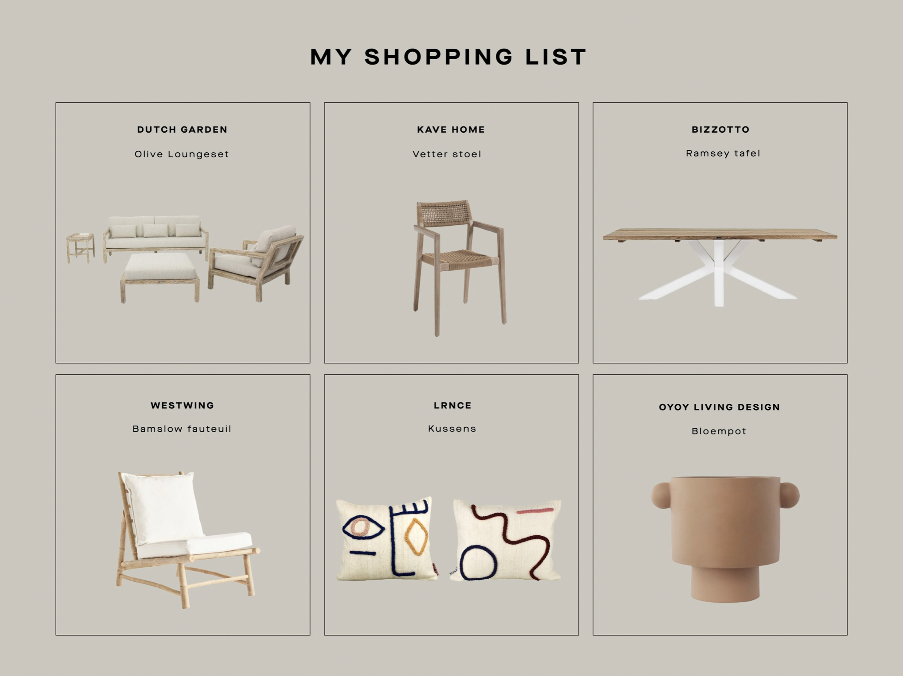

MEDITERRANE EN BOHEMIAN SFEER IN JE EIGEN TUIN MET KHORA DESIGN!
Het seizoen van de warme en zwoele avonden komt steeds dichterbij. Hoewel het dit jaar op zich laat wachten.. is het nu de ideale tijd om je tuin en/of balkon zomerproof te maken. De Mediterrane en Bohemian tuinlook is een look die al lange tijd populair is. De tuintrends laten ons zien dat deze sferen nog steeds erg aantrekkelijk zijn. Zie het als je kleine Ibiza, dicht bij huis. Ben jij benieuwd hoe je Mediterrane en Bohemian looks kunt creëren in jouw tuin of balkon? Khora Design kijkt met je mee!
WAT IS EEN BOHEMIAN/IBIZA STIJL?
Mensen die naar Ibiza zijn geweest weten waarom Bohemian met dit prachtige eiland geassocieerd wordt. Ibiza is mijn favoriete plek om naartoe te gaan. Even tot rust komen, aarden, ideeën opdoen en vooral genieten. Gewoon even terug naar de basis. Dit legt perfect uit wat Bohemian precies betekent. Bohemian is een levensstijl dat sinds de jaren ’60 bestaat. Het waren de hippies die vrijheid vooropstelde. Een hoop artiesten en kunstenaars hebben deze levensstijl omarmd en meegenomen in projecten. Zo ook de interieur wereld.
WAT IS EEN MEDITTERANE STIJL?
Bij een Mediterrane stijl staan een aantal dingen centraal: genieten van de zon met de verkoeling van de zee. Deze interieur stijl is gebaseerd op het leven van mensen in het Middellandse Zeegebied. Landen zoals Griekenland, Spanje en Italië. Wat ik mooi vind aan de Mediterrane stijl is de harmonieuze look en de warme kleuren die overal in terugkomen. Met de warme kleuren symboliseer je de warmte van de zon. Samen met de koele blauwe kleur is dit een mooie combinatie voor je tuin of balkon.
EEN MEDITERRANE EN BOHEMIAN TUINLOOK
In tuinstijlen komt een mix van Mediterrane en Bohemian veel voor. Beide staan bekend om optimaal genieten, warmte en rust. Zo gebruik je bij deze tuinstijl de lichte aardekleuren van de Bohemian sfeer met de rood- en bruintinten van de Mediterrane sfeer. Het beste is om te werken met een lichte ondergrond en vanuit daar verder te werken met tuinaccessoires en –meubilair.
TUINMEUBELS EN TUIN ACCESSOIRES KIEZEN
Wat ik erg belangrijk vind bij deze stijlen is het gebruikmaken van natuurlijke materialen. Zo kijk ik, bij het ontwerpen en inrichten van een tuin, naar het plaatsen van een houten salontafel met een terracotta muur of terracotta plantenpotten. Optimaal genieten doe je daarnaast door te kiezen voor tuinmeubels die comfortabel zijn. Zo kun je in je tuin of op je balkon een gezellig, Bohemian hoekje maken. Dit kun je heel eenvoudig doen. Sommige mensen vinden het eng om te spelen met patronen en veel kleuren, dus dan kijk ik eerst naar een fijne basis. Kies voor een lichte kleur bank, zodat je dit op een makkelijke manier kunt opfleuren. Dit doe je weer door buitenkleden en kussens in Boho sfeer aan te schaffen, dromenvangers op te hangen, maar ook grote planten en bloemen plaatsen.

Een voorbeeld van mijn shopping list :)
JE TUIN ONTWERPEN MET KHŌRA DESIGN
Wil je meer weten over het inrichten van een Mediterrane en Bohemian tuin? Of heb je vragen hoe je bij Khora Design terechtkunt voor een tuinontwerp? Neem dan gerust contact op! Samen kijken we niet alleen naar het ontwerpen van een tuin, maar ook naar het inrichten van je tuin met een Bohemian en/of Mediterrane sfeer voor een ultieme vakantie gevoel! Contact opnemen met Khora Design kun je doen middels het invullen van het contactformulier. Ik probeer binnen 24 uur contact met je op te nemen om een afspraak in te plannen!